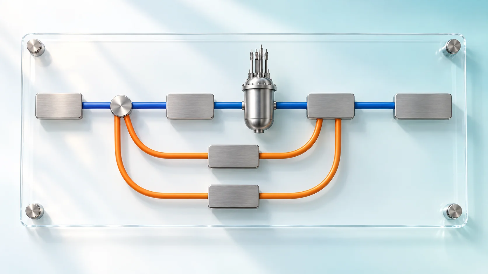
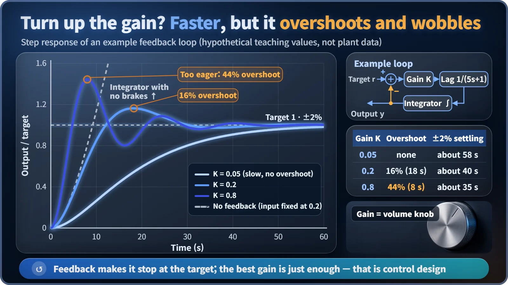

Modeling, Simulation & Computation · 269
Arrows That Come Back Around, Like a Loop Line — Reading a Nuclear Plant Model as a Block Diagram
Boxes are stations, arrows are lines, and the loops that come back are how a reactor keeps its own power in check.

A block diagram draws a system as connected blocks, each turning an input into an output, and keeps only "what changes what." Drawn for a pressurized water reactor, it shows one main line from reactivity to electricity and three loops coming back, two of them negative feedback created by physics itself. [1]
A map that keeps only the connections
Seoul's subway Line 2 has no terminus: board at City Hall, stay seated, and about an hour and a half later you are back at City Hall. Diagrams of nuclear plant models contain rings like that, arrows that head forward and then loop back. They are called block diagrams, and if you can read a subway map you can already read half of one.
A subway map leaves out how the river bends and how far apart stations are; only the connections remain. A block diagram likewise throws away the plant's size, pipe lengths and equipment locations and keeps the relationships.
Five lines of legend
| Symbol | Subway-map reading | What it does |
|---|---|---|
| Block (box) | Station | One component or one equation; turns an input into an output by a fixed rule |
| Arrow | Line | One block's output becomes the next block's input (cause → effect) |
| Summing point (⊕) | Transfer station | Adds or subtracts signals, e.g., target minus current value |
| Gain (K) | Volume knob | Multiplies the input by a fixed factor |
| Integrator (∫) | Bathtub filling | Keeps adding up whatever flows in over time |
The integrator matters most. A conservation law such as "heat in − heat out = rate of temperature rise" is drawn as a single integrator, so almost every quantity that builds up, such as coolant temperature or a tank's water level, comes out of one.
The whole plant on one page
In a pressurized water reactor, the main line runs left to right. Reactivity, a measure of how strongly the chain reaction tends to grow, enters the core block and comes out as thermal power. That heat raises the fuel temperature, passes to the coolant and sets its average temperature; the steam generator boils secondary-side water into steam, and the steam spins the turbine to make electricity.

Three loops running backward
The first loop starts at the fuel temperature: hotter fuel means uranium-238 absorbs more neutrons and reactivity falls (the Doppler effect). The second starts at the coolant temperature: warmer, less dense coolant is worse at slowing neutrons, so reactivity falls again. Both return to the front summing point with a minus sign. When power rises, they shave off reactivity and push it back down: negative feedback. Nobody switches these loops on; they come from the laws of physics. [2]
The third is a control loop designed by people. In one pressurized water reactor example, the turbine load sets a reference temperature, and control rods move according to the difference between that reference and the measured average coolant temperature. The turbine also pulls the core along: when more steam is drawn off, the coolant cools, reactivity rises and power follows. [3]
Unlike a loop subway line that just goes around, a feedback loop shrinks or grows the gap from the target every time it comes back.
Is a bigger gain always better?
Take an example loop: target → summing point → gain K → 5-second lag → integrator → output, fed back with a minus sign. Change the target to 1 and watch the output follow.

| Gain K | Peak overshoot | ±2% settling |
|---|---|---|
| 0.05 | none (still 98% at 60 s) | about 58 s |
| 0.2 | 16% at about 18 s | about 40 s |
| 0.8 | 44% at 8 s | about 35 s |
| No feedback | never stops rising | |
Without feedback the output never stops, because an integrator only knows how to pile things up. A small gain is slow; a large one is fast but overshoots and wobbles. Balancing the two is what control-system design is about. [1]
Arrows are not water flow
The arrows show cause and effect, "this value changes that value," not the direction water moves through the pipes. In real piping, pressure and flow push and pull on each other, so the modeler decides which counts as the cause. That is why an equipment drawing and a block diagram of the same plant look completely different. Designers set control gains on these diagrams, safety analysts check that every negative loop is in place, and operator training uses them to explain how rods and temperatures move when the load changes.
Key takeaways
Boxes are stations, arrows are lines, circles are transfer stations, and the rings that come back are loop lines. Read a plant's block diagram this way and you can see how it keeps its own power in check: one main line forward, and negative feedback loops built in by physics.